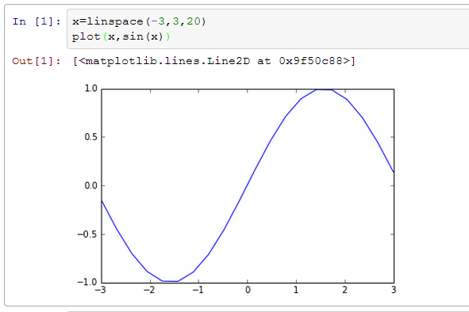

Learning IPython for Interactive Computing and Data Visualization这本书的前两章的笔记, 这本书还被放在了IPython官网上, 虽然只有一百页多一点点, 但是讲的内容却很丰富, 介绍了IPython, numpy, pandas以及并行计算等方面.
(在开始系统学IPython之前简单使用过IPython, 那时候我还是更喜欢bpython的代码提示功能...)
ch1: 10 IPython essentials
- 在任何变量后面加问号
?或者双问号??, 将会输出详细的信息(按q退出),??的信息更加详细些 - Tab Completion: 没啥好说的 没有bpython做的好 也凑合吧...
_, __, ___保存最近三次的输出;_i, __i, ___i保存最近三次的输入(作为字符串保存)
magic commands
- 在IPython里面可以使用一些标准unix命令, 比如
cd,pwd,ls等...
这个太好了 否则还要import os, 然后再什么os.chdir('...')
- 其实这些unix命令是IPython的magic commands, 这些magic commands一般用
%作为前缀.
但是由于默认IPython开启了automagic system, 上面那些命令可以不用加前缀了(或者使用Tab自动给加上前缀)
%run命令, 运行一个.py脚本, 但是好处是, 与运行完了以后这个.py文件里的变量都可以在Ipython里继续访问%timeit命令, 可以用来做基准测试(benchmarking), 测试一个命令(或者一个函数)的运行时间
ex.
%timeit [x*x for x in range(1000)] 10000 loops, best of 3: 56.5 µs per loop %timeit [x*x for x in xrange(1000)] 10000 loops, best of 3: 51.7 µs per loop
%debug命令: 当有exception的时候, 在console里输入%debug即可打开debugger.
在debugger里, 输入u,d(up, down)查看stack, 输入q退出debugger
%debug > <ipython-input-34-17c374156862>(2)<module>() 1 if 1<2: ----> 2 raise Exception 3 ipdb> u *** Oldest frame ipdb> d *** Newest frame ipdb> q
使用%pdb开启自动pdb模式
%pdb
Automatic pdb calling has been turned ON
-
%pylab命令, 大杀器, 看一下都import了什么:%pylab makes the following imports:: import numpy import matplotlib from matplotlib import pylab, mlab, pyplot np = numpy plt = pyplot from IPython.display import display from IPython.core.pylabtools import figsize, getfigs from pylab import * from numpy import *
画图的时候可以不用非要加plt.前缀了, 直接plot()即可. 图像化出来的时候, 画图窗口并没有block, 可以动态(interactively)画图.
另外, qtconsole和notebook一样, 指定了inline选项以后可以直接在窗口里画图:

后来发现inline的图片貌似不能放大看, 所以有时候还是单独一个窗口比较好, 换到非inline模式只需要再输入以下%pylab, 加上选项qt:
%pylab qt
IPython Notebook
(重头戏)
这个可以在浏览器里(!!)使用IPython, 并且可以使用多行编辑后再一并执行.
The Notebook brings the functionality of IPython into the browser for multiline textediting features, interactive session reproducibility, and so on.
在shell/cmd窗口里启动ipython的时候加上notebook:
$ipython notebook
看到浏览器打开了, 很神奇:

新建一个notebook, 用用看:

使用的过程中渐渐理解了为什么书里说可以用来做"multiline textediting features, interactive session reproducibility"... 因为这不只是个编程的东西, 还可以作为一个笔记本 — 而且是一个交互式的笔记本!
(注: 更多关于notebook的介绍在下面第二章的内容里.)
- 代码,或者段落, 按照cell(格子)进行组织, 一个cell里面的内容可以是code, 但是也同样可以是markdown的段落, 或者是一个标题(heading).
- 在一个代码的cell里, 写入多行代码, 就像在编辑器里写python程序一样, 按回车只会换行, 不会运行程序.
写了一段程序代码以后, 按ctrl+Enter运行程序, 运行结果也是一个作为cell.
(注: 在qtconsole里面相反, 如果要输入多行程序的话, 按Ctrl+Enter换行(按一一次ctrl+enter即可进入多行编辑模式), 写了几行代码以后要运行的话, 就按两次回车, 或者按Shift+Enter)
- ...还有好多快捷键, 按Esc以后再按h就可以看到... 这个还分编辑模式和命令模式呢... 真不能小看了IPython了!

customizing IPython
保存自己的IPython配置文件, 只需要在shell/cmd里输入ipython profile create, 配置文件存储在 ~.ipython 或者 ~/.config/ipython目录里.
ch2: Interavtive Work with IPython
IPython可以实现shell(OS)和python的交互. 这样做一些unix shell的操作的时候可以不必退出console了.
navigating the file system
例子: 完成下载压缩包, 解压缩, 以及打开解压后的文件这些操作...
在py变量前面加入$, 可以把这个变量共享给OS或者magic command:
folder='data' %mkdir $folder
这样就在当前目录下建立一个'data'文件夹 — 这可比py的命令好记多了啊... %mkdir的原理其实是给了shell命令一个别名(alias).
然后, %bookmark可以把当前的目录加入收藏夹 下次cd的时候方便直接跳到这里来:
ex.
%bookmark bm
那么以后可以直接用 cd bm 跳到这个目录下. %bookmark -l 可以列出收藏夹的目录内容.
然后发现原来IPython连文件名都是可以提示的啊!...
with open('0<TAB> 0.circles 0.edges
Accessing system shell with IPython
在IPython里调用系统的命令, 不用再使用sys.exec('...')之类冗长的方式了, 只需要在系统的命令前面加上一个感叹号!即可...
shell返回的结果可以作为一个string的列表保存在一个python variable里.
ex.
In [2]: files = !ls -1 -S | grep edges In [3]: files Out[3]: ['1912.edges', '107.edges', [...] '3980.edges']
(当然 上面这一行只能在unix系统下运行, 因为Windows的cmd没有ls 和 grep命令)
还可以把一条比较长的命令作为alias保存起来, 用%alias命令... (这个应该一般用不到)
%alias largest ls -1sSh | grep %s
The Extended Python Console
%history或者%hist, 显示之前的记录, 有一些参数可用...%store把python变量的内容保存下来, 以后的session可以用%paste导入并执行剪贴板里面的内容%run之前讲过了, 运行py文件, 运行后py文件里的变量可以在console里访问%edit打开系统的文件编辑器, 并且在关闭这个编辑器时自动运行程序- 介绍了一个包 networkx, 可以用来分析复杂网络(graph)的....
debug
- debug加入断点:
%run -d -b29 script.py运行script.py 并且在29行的时候暂停, 当输入c的时候再继续运行. - 一些pdb(debugging环境)里常用的命令:
u/dfor going up/down into the call stacksto step into the next statementnto continue execution until the next line in the current functionrto continue execution until the current function returnscto continue execution until the next breakpoint or exceptionpto evaluate and print any expressionato obtain the arguments of the current functions- The
!prefix to execute any Python command within the debugger
benchmarking("基准测试")
%timeit fun()测试一个函数的执行速度%run -t和%timeit效果类似, 作用是测试一个py脚本文件的执行速度- 更精细的运行时间测试, 可以用profile模块
The profiler outputs details about calls of every Python function used directly or indirectly in this script.
@@...好高级!!! 这样的话就更容易发现程序运行的瓶颈在哪里了!
方法是使用 %run -p 或者 %prun
Using the IPython notebook
这个notebook的功能实在是很NB... 不仅可以加入代码/markdown段落, 还可以加入图片和视频... notebook的格式为.ipybn文件, 用JSON存储数据.
-
输入
ipython notebook(或者在ipython里输入!ipython notebook)以后, 会在8888端口建立一个web server, 访问 http://localhost:8888/ 就可以看到上面的那个截图, 或者称之为notebook dashboard. -
cell magics的作用域是整个cell(多行), 而magic command的作用域是一行, cell magics的前缀是两个百分号
%%. -
从一个py文件直接建立一个notebook, 只需要把文件拖入dashboard即可, 然后notebook也可以保存为文件.
-
编辑了Markdown以后, 还是
Ctrl+Enter/Shift+Enter, 即可成为格式化的文本, 再双击就可以编辑!! -
让plot的图片直接嵌入在notebook里面: 使用
ipython notebook --pylab inline, 或者在notebook里面输入%pylab inline

notebook的一些快捷键
- Esc从编辑模式(edit mode)退出到命令模式(command mode)
- Enter从命令模式到编辑模式
(编辑模式下)
- ctrl+Enter: 运行程序/markdown代码
- shift+Enter: 运行程序, 并自动跳到下一个cell
- alt+Enter: 运行程序, 并自动在后面新建一个cell在
(命令模式下)
- c: 复制一个cell
- x: 剪切一个cell
- v: 粘贴cell
- a: 在当前cell上面(above)新建一个cell
- b: 在当前cell下面(below)新建一个cell
- m: 让当前cell变成一个markdown的cell
- y: 让当前cell变成code的cell
- 1,2,3...: n级标题
- j,k: 上下移动选中的cell, vim风格..
- dd(d按两下): 删除一个cell(vim 风格...)
......爽到爆!!

Comments !